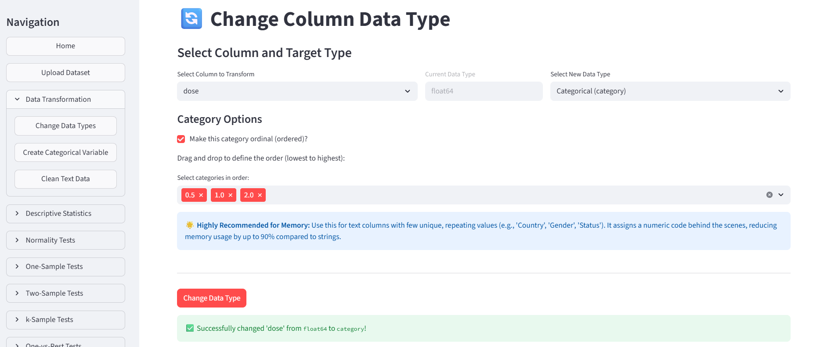
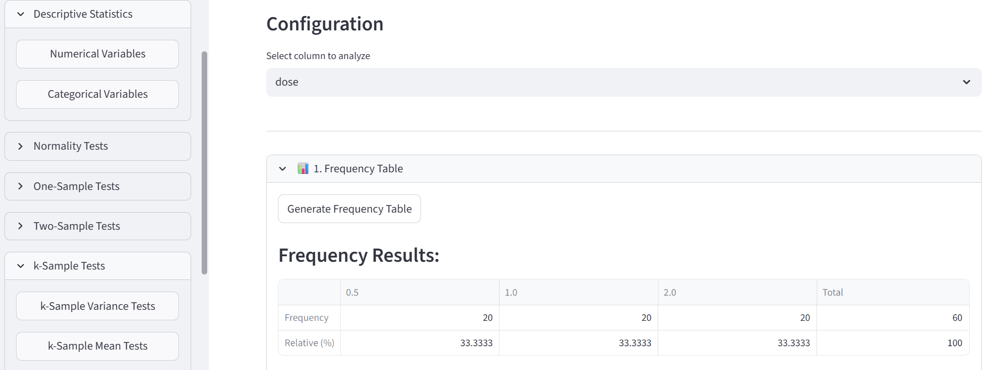
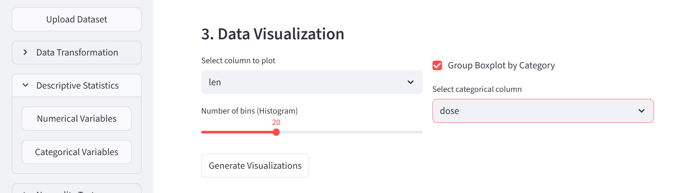
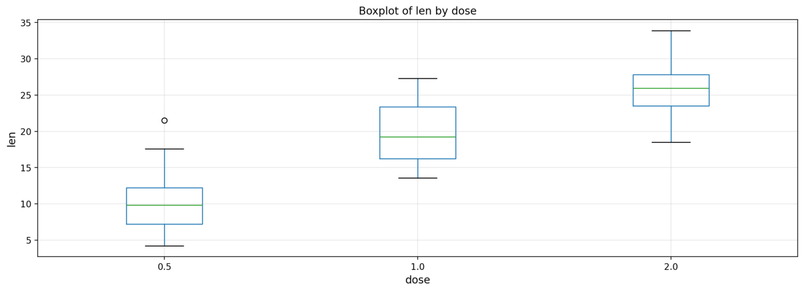
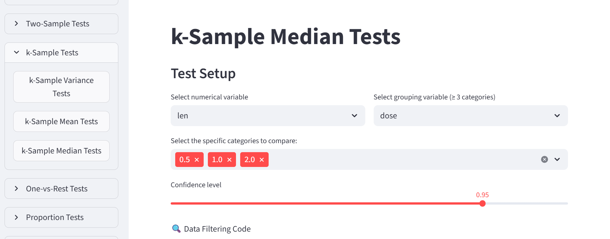
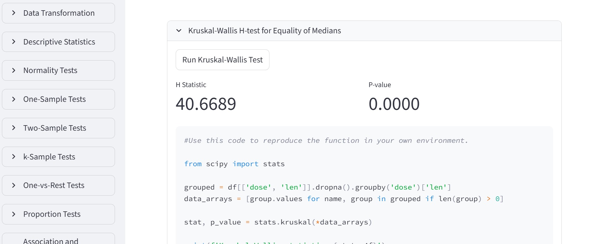
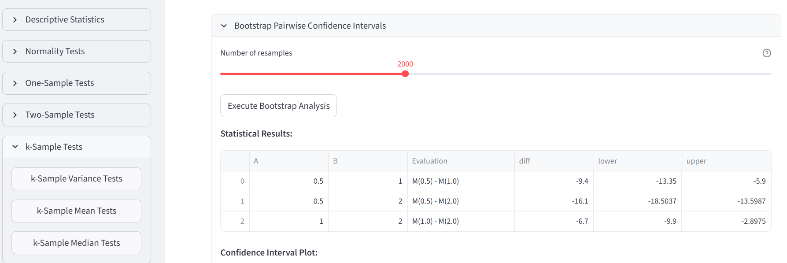
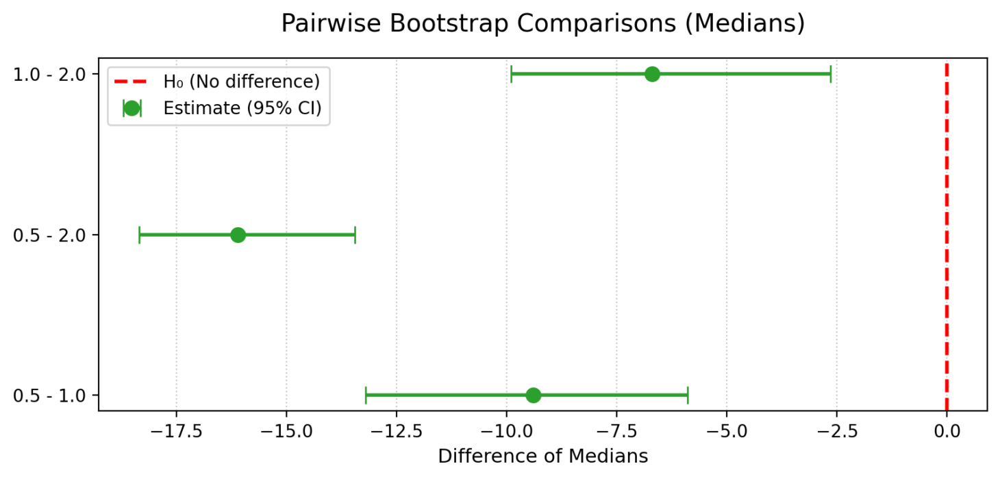

02 · Dientes
Un análisis no paramétrico con Kruskal–Wallis
Presentación del escenario
¿Cambia la longitud de los odontoblastos entre tres dosis de vitamina C? Usaremos ToothGrowth, con datos de 60 cobayas, para conocer una prueba basada en rangos y ver su código Python.
Este ejemplo se centra en la dosis. El dataset también incluye dos formas de administración de vitamina C; aquí las ignoramos para simplificar el recorrido.
1. Preparar los datos
- Carga el CSV de
ToothGrowthdesde Upload Dataset. - En Data Transformation → Change Data Types, selecciona
dosey conviértela en Categorical (category). Esta variable es categóroca ordinal, el orden debe ser 0.5, 1.0, 2.0. - En Descriptive Statistics → Numerical Variables, elige
len. Genera un gráfico de cajas agrupado pordose.


Comprueba también las frecuencias de dose en Categorical Variables: hay 20 animales por dosis.


Las medianas parecen aumentar con la dosis. Ahora vamos a contrastar si hay diferencias entre los grupos utilizando un procedimiento no paramétrico: Kruskal–Wallis.
Kruskal–Wallis compara rangos en grupos independientes y no exige normalidad. Cuando las formas y dispersiones son similares, se interpreta como una comparación de medianas. No hace falta probar Shapiro–Wilk o Levene para usarlo. Lo elegimos para practicar un método no paramétrico, no hemos descartado ANOVA necesariamente.
2. Ejecutar Kruskal–Wallis
En k-Sample Tests → k-Sample Median Tests, selecciona:
- Variable numérica:
len. - Agrupación:
dose. - Categorías: 0.5, 1.0 y 2.0.
La hipótesis nula es que los grupos tienen la misma distribución. Pulsa Run Kruskal-Wallis Test para ver los resultados y el código Python que genera la aplicación.


En el ejemplo, \(\mathbf{H \approx 40,67}\) y p < 0,001. Hay suficiente evidencia para descartar la hipótesis nula de que las medianas son iguales. El resultado global no dice por sí solo qué pares difieren.
Aunque el menú se llame Median Tests, recuerda que la interpretación del test depende de la forma de las distribuciones.
Localiza stats.kruskal debajo del resultado. Compara ese bloque con el ANOVA del episodio anterior: se preparan grupos de observaciones, pero cambia la función estadística.
3. Intervalos de confianza por pares con bootstrap
Kruskal–Wallis no ofrece comparaciones por pares ni intervalos de confianza, el software incluye un procedimiento mediante bootstrap: se remuestrean los datos y se calculan las diferencias de medianas entre pares de grupos. En Bootstrap Pairwise Confidence Intervals, conserva len, dose y las tres dosis. Selecciona 95 % de confianza y 2000 remuestreos, y genera los intervalos para las diferencias de medianas.


Para 0.5 − 1.0, la diferencia observada es −9,4, con un intervalo aproximado de −13,35 a −5,90. El primer grupo tiene una mediana menor; el intervalo no incluye cero. Los otros dos intervalos también son negativos.
Estos intervalos estudian diferencias de medianas, Kruskal–Wallis no trabaja con medianas directamente. Úsalos como exploración adicional.
Para el aprendizaje Recuerda que aquí ignoramos las dos formas de administración: este recorrido no estudia sus diferencias ni su interacción con la dosis. Investiga cómo esta variable afecta la longitud de los odontoblastos.